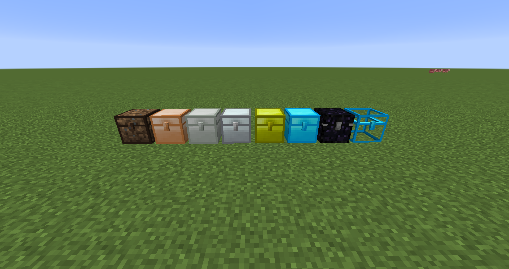
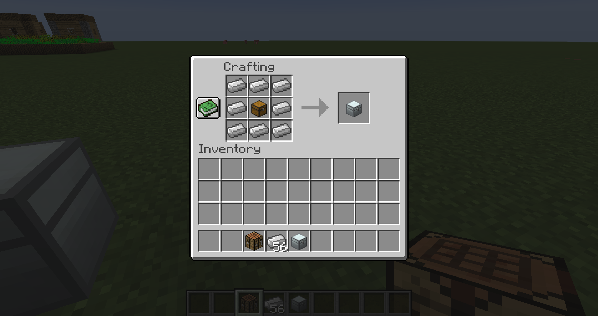
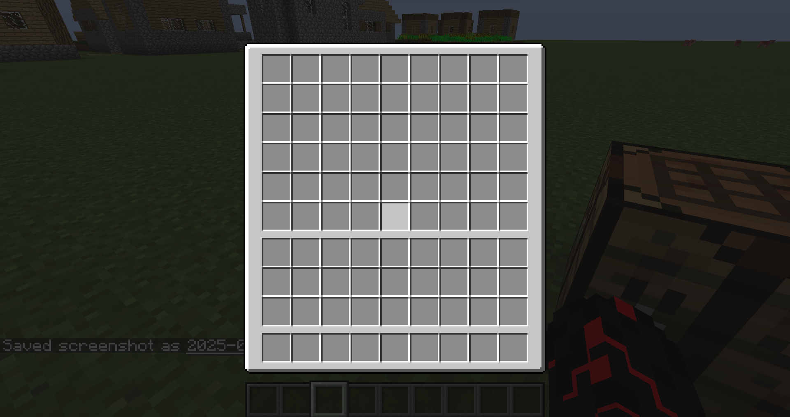
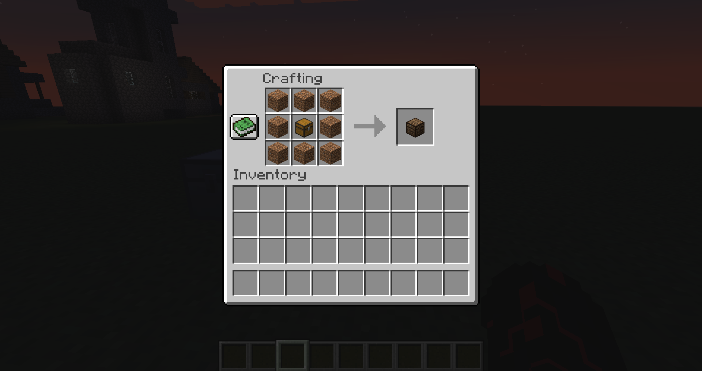
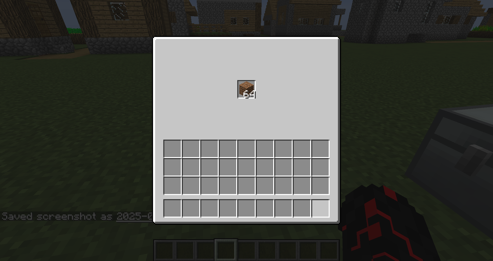

IronChest est un mod minecraft ajoutant des coffres fais de minerais. plus le coffre est fais de minerais rare, plus le nombre de slot augmente.
pour le coffre en fer, il faut uniquement un coffre en bois entouré de lingot de fer. le coffre vous propose 54 slots.
 Le coffre un terre est spécial car.... il possède qu'un seul slot, pouvant contenir uniquement de la terre. comment vous dire que cela n'est pas très utils. le craft reste cependant assez simple.
 